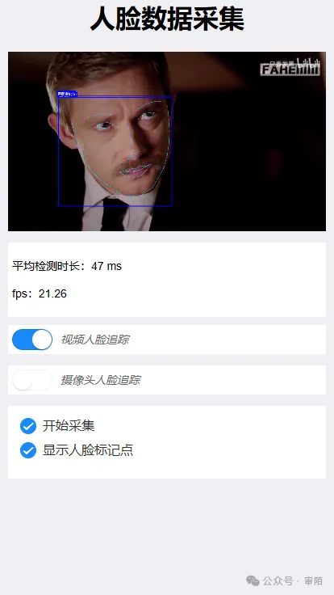

HaoTian · 2024-10-14 21:15:08
该案例可以对两种场景进行人脸数据采集，一种乃视频中采集，根据对视频中人物面部数据采集来实现，效果如下：
另一种为实时数据采集，利用摄像头实时数据对人脸数据进行采集，这种场景通常用于门卫人脸系统，扫脸支付系统等，当然，随着安全问题的频发，支付扫脸或身份识别系统等较为重要的数据系统程序算法更为严谨，对于 face-api 而言，日常人脸数据采集已完全够用。
<template>
<div>
<h1 style="text-align: center;">人脸数据采集</h1>
<input
hidden
type="file"
@change="setImage"
accept="image/*"
ref="pickImage"
/>
<!-- 图片/视频 捕获区 -->
<div class="detectBox">
<img
v-show="!data.trackVideoFaces && !data.trackCameraFaces"
:src="data.base64"
alt=""
width="500"
ref="img"
id="myImg"
@load="detectFactory"
/>
<video
v-if="data.trackVideoFaces"
width="500"
ref="video"
id="myVideo"
muted
playsinline
preload
loop
@durationchange="video.play()"
@play="data.videoStatus = 1"
@pause="data.videoStatus = 0"
>
<source src="./media/shylock.mp4" type="video/mp4" />
<!-- <source src="./media/1.mp4" type="video/mp4"> -->
抱歉，您的浏览器不支持嵌入式视频。
</video>
<video
v-if="data.trackCameraFaces"
ref="video"
id="myVideo"
autoplay
muted
playsinline
@play="data.videoStatus = 1"
@pause="data.videoStatus = 0"
/>
<img
src="./images/2.png"
alt=""
class="shadows"
ref="shadow"
v-if="data.trackCameraFaces"
/>
<canvas ref="canvas" />
<canvas ref="canvas2" />
</div>
<section
v-show="data.trackVideoFaces || data.trackCameraFaces"
class="timer"
>
<p>平均检测时长：{{ data.time }}</p>
<p>fps：{{ data.fps > 200 ? '200+' : data.fps }}</p>
</section>
<div class="bottomBox">
<p>
<van-switch
v-model="data.trackVideoFaces"
:disabled="data.trackCameraFaces"
size="24"
/>
视频人脸追踪
</p>
<p>
<van-switch
v-model="data.trackCameraFaces"
:disabled="data.trackVideoFaces"
size="24"
/>
摄像头人脸追踪
</p>
</div>
<van-checkbox-group v-model="data.optionList" @change="detectFactory">
<van-checkbox name="showBorder">开始采集</van-checkbox>
<!-- <van-checkbox name="showBorder">显示人脸边界</van-checkbox> -->
<van-checkbox name="showMark">显示人脸标记点</van-checkbox>
</van-checkbox-group>
<!-- 摄像头列表 -->
<van-popup
:show="data.showCameraList"
position="bottom"
round
:close-on-click-overlay="false"
>
<van-picker
title="摄像头列表"
:columns="data.cameraList"
@confirm="getVideoStream"
@cancel="data.showCameraList = false; data.trackCameraFaces = false"
/>
</van-popup>
<!-- 人脸检测器配置 -->
<van-popup
:show="data.showConfig"
position="bottom"
round
:close-on-click-overlay="false"
>
<van-picker
title="人脸检测器配置"
:columns="data.columns"
@confirm="selectHandle"
@cancel="data.showConfig = false"
@change="handleColumnDisabled"
/>
</van-popup>
</div>
</template>
<script setup>
import * as faceapi from "face-api.js";
import { onMounted, reactive, toRefs, watch } from "vue";
import { Toast } from "vant";
const data = reactive({
base64: "",
similarity: 0, // 相似度
detectList: [], // 检测项
optionList: [], // 辅助项
showSimilar: false, // 人脸相似度比较
trackVideoFaces: false, // 视频人脸追踪
trackCameraFaces: false, // 摄像头人脸追踪
videoStream: "", // 摄像头视频流
videoStatus: 0, // 0：暂停，1：播放
genderTranslator: {
male: "男",
female: "女",
},
expressionTranslator: {
neutral: "正常",
happy: "开心",
sad: "伤心",
angry: "生气",
fearful: "害怕",
disgusted: "恶心",
surprised: "惊喜",
},
// 检测类型
detectTypes: [
"AgeAndGender", // 年龄性别
"Expression", // 表情
"Face", // 人脸
],
faces: [], // 录入的人脸描述
showConfig: false, // 人脸检测器配置弹出层
columns: [
{
values: [
{ text: "SSD", value: "SSD" },
{ text: "Tiny", value: "Tiny" },
],
defaultIndex: 1,
},
{
values: [
{ text: "0.1", value: 0.1 },
{ text: "0.2", value: 0.2 },
{ text: "0.3", value: 0.3 },
{ text: "0.4", value: 0.4 },
{ text: "0.5", value: 0.5 },
{ text: "0.6", value: 0.6 },
{ text: "0.7", value: 0.7 },
{ text: "0.8", value: 0.8 },
{ text: "0.9", value: 0.9 },
],
defaultIndex: 4,
},
{
values: [
{ text: "128", value: 128 },
{ text: "160", value: 160 },
{ text: "224", value: 224 },
{ text: "320", value: 320 },
{ text: "416", value: 416 },
{ text: "512", value: 512 },
{ text: "608", value: 608 },
],
defaultIndex: 3,
},
],
selectedValue: ["Tiny", 0.5, 320],
showCameraList: false, // 摄像头列表弹出层
cameraList: [],
videoTrack: null,
count: 0,
forwardTimes: [],
time: "",
fps: "",
});
const refs = reactive({
canvas: null,
canvas2: null,
shadow: null,
img: null,
video: null,
pickImage: null,
});
const { canvas, canvas2, img, shadow, video, pickImage } = toRefs(refs);
/**
* remind
*
* const input = await faceapi.fetchImage(uri);
* */
/**
* @description 录入人脸数据
*
* 大脸照、黑白照可能识别不出来，可以修改配置，降低人脸的置信度
* */
const entryFaces = async () => {
const imgs = document.querySelectorAll(".faceCompare img");
for (const img of imgs) {
/** 注意：这里不能传options，不然会报错 */
const singleResult = await faceapi
.detectSingleFace(img)
.withFaceLandmarks()
.withFaceDescriptor();
data.faces = [
...data.faces,
new faceapi.LabeledFaceDescriptors(img.alt, [singleResult.descriptor]),
];
}
};
/**
* @desc 自定义文本描绘框
*
* @param {object} box - 盒子位置大小
* @param {object} options - 配置项
* */
const drawLabelBox = (box, options) => {
// 绘制框 + 绘制文本
const _box = { x: 50, y: 50, width: 100, height: 100 };
const drawOptions = {
label: "Hello I am a box!", // 框的描述文字，只能整单行文字
lineWidth: 2, // 边框宽度
boxColor: "red", // 边框颜色，默认蓝色
drawLabelOptions: {
anchorPosition: "TOP_LEFT", // [TOP_LEFT | TOP_RIGHT | BOTTOM_LEFT | BOTTOM_RIGHT]
backgroundColor: "rgba(0, 0, 0, 0.5)", // label文字块的背景颜色
fontColor: "purple", // label文字颜色
fontSize: 20, // label文字大小
padding: 15, // label文字的padding
},
};
const drawAreaBox = new faceapi.draw.DrawBox(
box || _box,
options || drawOptions
);
drawAreaBox.draw(canvas.value);
};
/**
* @desc 自定义文本字段
*
* @param {array} texts - 多行文字
* @param {object} pos - 文本位置
* @param {object} options - 配置项
* */
const drawTexts = (texts, pos, options) => {
// 绘制多行文本块
const text = ["This is a textline!", "This is another textline!"];
const anchor = { x: 200, y: 200 }; // 相对于canvas的位置
const drawOptions = {
// backgroundColor: 'rgba(0, 0, 0, 0.5)', // 文字块的背景颜色
// fontColor: 'purple', // 文字颜色
fontSize: 20, // 文字大小
// padding: 15 // 文字的padding
};
const drawTextBox = new faceapi.draw.DrawTextField(
texts || text,
pos || anchor,
options || drawOptions
);
drawTextBox.draw(canvas.value);
};
const detectFactory = async () => {
const {
detectList,
optionList,
faces,
base64,
trackVideoFaces,
trackCameraFaces,
videoStatus,
} = data;
const input = trackVideoFaces || trackCameraFaces ? "myVideo" : "myImg";
const ts = Date.now();
if (
(input === "myImg" && !base64) ||
(input === "myVideo" && !videoStatus)
) {
return;
}
let displaySize;
if (input === "myImg") {
displaySize = {
width: img.value.width,
height: img.value.height,
};
} else {
displaySize = faceapi.matchDimensions(canvas.value, video.value, true);
}
// 准备画布，没有这一步方框位置会偏移
faceapi.matchDimensions(canvas.value, displaySize);
const options = getFaceDetectorOptions();
// 绘制性别年龄
if (detectList.includes("AgeAndGender")) {
const detections = await faceapi
.detectAllFaces(input, options)
.withFaceLandmarks()
.withAgeAndGender();
// 调整检测到的盒子和地标的大小，以防显示的图像与原始图像大小不同
const resizedResults = faceapi.resizeResults(detections, displaySize);
// 输出年龄、性别、年龄可能性
resizedResults.forEach((result) => {
const { age, gender, genderProbability } = result;
drawTexts(
[
`${data.genderTranslator[gender]} (${
faceapi.utils.round(genderProbability) * 100
}%)`,
`${faceapi.utils.round(age, 0)} 岁 `,
],
result.detection.box.bottomLeft
);
});
}
// 绘制脸部边界
if (optionList.includes("showBorder")) {
const detections = await faceapi.detectAllFaces(input, options);
// 调整检测到的盒子和地标的大小，以防显示的图像与原始图像大小不同
const resizedDetections = faceapi.resizeResults(detections, displaySize);
// 绘制方框
// faceapi.draw.drawDetections(canvas.value, resizedDetections);
// 自定义输出边界盒子
resizedDetections.forEach((result) => {
const { box, _score } = result;
// console.log(result,'三观匹配值');
if (_score > 0.95) {
const ctx = canvas2.value.getContext("2d");
ctx.drawImage(
video.value,
0,
0,
canvas2.value.width,
canvas2.value.height
);
// 将canvas转换为Base64图像
let base64 = canvas2.value.toDataURL("image/png");
let im = new Image();
im.src = base64;
canvas2.value.style.display = "none";
document.body.append(im);
data.trackVideoFaces = false;
data.trackCameraFaces = false;
alert("采集成功！");
return;
}
drawLabelBox(box, {
label: `匹配度${Math.round(_score * 100)}%`,
});
});
}
// 绘制脸部标记点
if (optionList.includes("showMark")) {
const detections = await faceapi
.detectAllFaces(input, options)
.withFaceLandmarks();
// 调整检测到的盒子和地标的大小，以防显示的图像与原始图像大小不同
const resizedResults = faceapi.resizeResults(detections, displaySize);
// 将标记点绘制到画布中
faceapi.draw.drawFaceLandmarks(canvas.value, resizedResults);
}
if (videoStatus) {
updateTimeStats(Date.now() - ts);
setTimeout(() => {
window.requestAnimationFrame(detectFactory);
});
}
};
// 计算平均花费时长和FPS
const updateTimeStats = (timeInMs) => {
data.forwardTimes = [timeInMs].concat(data.forwardTimes).slice(0, 30);
const avgTimeInMs =
data.forwardTimes.reduce((total, t) => total + t) /
data.forwardTimes.length;
data.time = `${Math.round(avgTimeInMs)} ms`;
data.fps = `${faceapi.utils.round(1000 / avgTimeInMs)}`;
};
// 配置人脸检测器参数
const getFaceDetectorOptions = () => {
const { selectedValue } = data;
return selectedValue[0] === "SSD"
? new faceapi.SsdMobilenetv1Options({
minConfidence: selectedValue[1],
})
: /**
* @param inputSize?: number
处理图像的大小，越小越快
在检测较小的人脸时， 必须被32整除
常见的大小有128、160、224、320、416、512、608 ,
用于通过网络摄像头进行人脸跟踪我建议使用较小尺寸的，例如128、160
用于检测较小的人脸使用较大尺寸的，例如512、608
默认值： 416
* @param scoreThreshold?: number
最小置信阈值
默认值:0.5
*
* @desc inputSize和scoreThreshold的不同配置，都会影响返回结果的数量
* */
new faceapi.TinyFaceDetectorOptions({
scoreThreshold: selectedValue[1],
inputSize: selectedValue[2],
});
};
// 控制人脸检测器选项
const handleColumnDisabled = (allSelected, rowIndex) => {
if (rowIndex === 0) {
data.columns[2].values =
allSelected[0].value === "SSD"
? data.columns[2].values.map((item) => ({ ...item, disabled: true }))
: data.columns[2].values.map((item) => ({
...item,
disabled: false,
}));
}
};
// 人脸检测器配置项改变
const selectHandle = (values) => {
const { trackVideoFaces, trackCameraFaces } = data;
data.selectedValue = values.map((item) => item.value);
data.showConfig = false;
// 图片检测，重新加载检测函数，视频不需要（播放时会一直重复调用）
if (!trackVideoFaces && !trackCameraFaces) {
detectFactory();
}
};
// 获取媒体设备列表
const getMediaDevices = () => {
if (!navigator.mediaDevices || !navigator.mediaDevices.enumerateDevices) {
Toast.fail({
message: "不支持 enumerateDevices()",
forbidClick: true,
mask: true,
});
return;
}
navigator.mediaDevices
.enumerateDevices()
.then((devices) => {
const cameras = devices
.filter((item) => item.kind === "videoinput")
.map((item, index) => ({
text: item.label || `摄像头${index + 1}`,
value: item.deviceId,
}));
if (cameras.length) {
data.showCameraList = true;
data.cameraList = cameras;
} else {
Toast.fail({
message: "未找到网络摄像头",
forbidClick: true,
mask: true,
});
}
})
.catch((err) => {
console.log(err);
});
};
// 请求媒体设备，获取视频流
const getVideoStream = (deviceId) => {
data.showCameraList = false;
navigator.mediaDevices
.getUserMedia({
audio: false,
video: {
sourceId: deviceId[0],
},
})
.then(function (stream) {
video.value.srcObject = stream;
console.log(video.value.offsetWidth, video.value.offsetHeight);
shadow.value.width = video.value.offsetWidth;
shadow.value.height = video.value.offsetHeight * 1.5;
data.videoTrack = stream.getTracks()[0];
window.requestAnimationFrame(detectFactory);
})
.catch(function () {
Toast.fail({
message: "摄像头调用失败",
forbidClick: true,
mask: true,
});
});
};
// 加载模型
const init = () => {
const toast = Toast.loading({
duration: 0,
message: "模型加载中...",
forbidClick: true,
mask: true,
});
// 加载训练好的模型np
// ageGenderNet: 年龄、性别识别模型，大约420KB
// faceExpressionNet: 人脸表情识别模型，识别表情,开心，沮丧，普通，大约310KB
// faceLandmark68Net： 68个点人脸地标检测模型（默认模型），大约350KB
// faceLandmark68TinyNet：68个点人脸地标检测模型（小模型），大约80KB
// faceRecognitionNet: 人脸识别模型，可以比较任意两个人脸的相似性，大约6.2MB
// ssdMobilenetv1： SSD 移动网络 V1，大约5.4MB，准确的最高，推理时间最慢
// tinyFaceDetector: 微型人脸检测器（实时人脸检测器），与 SSD Mobilenet V1 人脸检测器相比，它速度更快、体积更小且资源消耗更少，但在检测小人脸方面的表现略逊一筹。移动和网络友好
// mtcnn 大约2MB
// tinyYolov2 识别身体轮廓的算法，不知道怎么用
Promise.all([
faceapi.nets.faceRecognitionNet.loadFromUri("./models"),
faceapi.nets.faceLandmark68Net.loadFromUri("./models"),
faceapi.nets.faceLandmark68TinyNet.loadFromUri("./models"),
faceapi.nets.ssdMobilenetv1.loadFromUri("./models"),
faceapi.nets.tinyFaceDetector.loadFromUri("./models"),
faceapi.nets.mtcnn.loadFromUri("./models"),
faceapi.nets.faceExpressionNet.loadFromUri("./models"),
faceapi.nets.ageGenderNet.loadFromUri("./models"),
// faceapi.nets.tinyYolov.loadFromUri('./models')
])
.then(() => {
entryFaces();
toast.clear();
})
.catch(() => {
toast.clear();
});
};
onMounted(() => {
init();
});
// 监听摄像头
watch(
() => data.trackCameraFaces,
(newValue) => {
if (newValue) {
getMediaDevices();
} else {
// 关闭摄像头
data.videoTrack?.stop();
}
}
);
</script>
<style lang="less" scoped>
/* 图片/视频 捕获区 */
.detectBox {
position: relative;
// min-height: 200px;
img,
video {
width: 100%;
}
canvas {
width: 100%;
position: absolute;
top: 0;
left: 0;
}
}
/* 美化样式 */
.van-button {
margin: 20px 15px 0 0;
}
.van-checkbox-group {
background: #fff;
padding: 15px;
margin-top: 10px;
.van-checkbox {
margin-bottom: 10px;
}
}
.bottomBox {
p {
display: flex;
align-items: center;
margin-top: 10px;
font-size: 14px;
background-color: #fff;
padding: 5px;
color: #666;
font-style: italic;
.van-switch {
margin-right: 10px;
}
}
}
.faceCompare,
.similarity {
box-shadow: 0 2px 6px 0 rgba(0, 0, 0, 0.5);
background-color: #fff;
padding: 5px;
margin: 10px 0;
box-sizing: border-box;
h2 {
font-size: 16px;
margin-bottom: 5px;
}
.referenceImgs {
display: flex;
justify-content: flex-start;
text-align: center;
img {
width: 100px;
height: 140px;
margin-right: 10px;
display: block;
}
span {
font-size: 12px;
}
}
}
.danger {
color: red;
}
.timer {
font-size: 14px;
line-height: 20px;
background-color: #fff;
padding: 5px;
margin: 10px 0;
box-sizing: border-box;
}
.shadows {
position: absolute;
top: 0;
left: 0;
z-index: 1000;
}
</style>